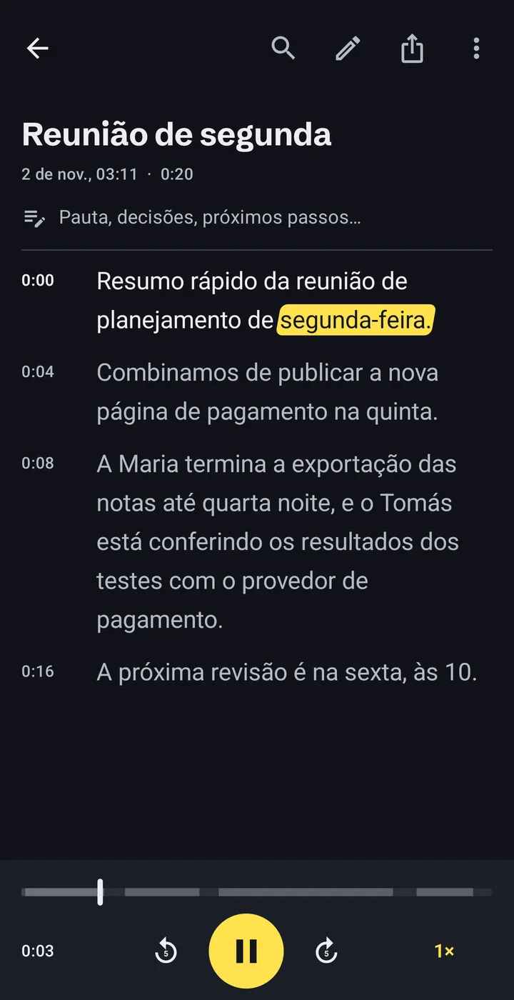
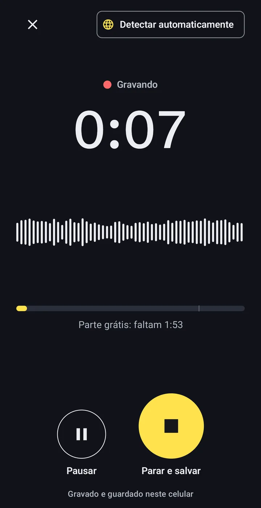
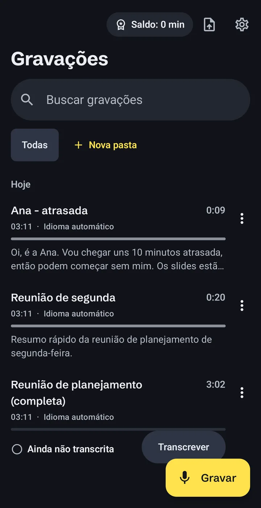
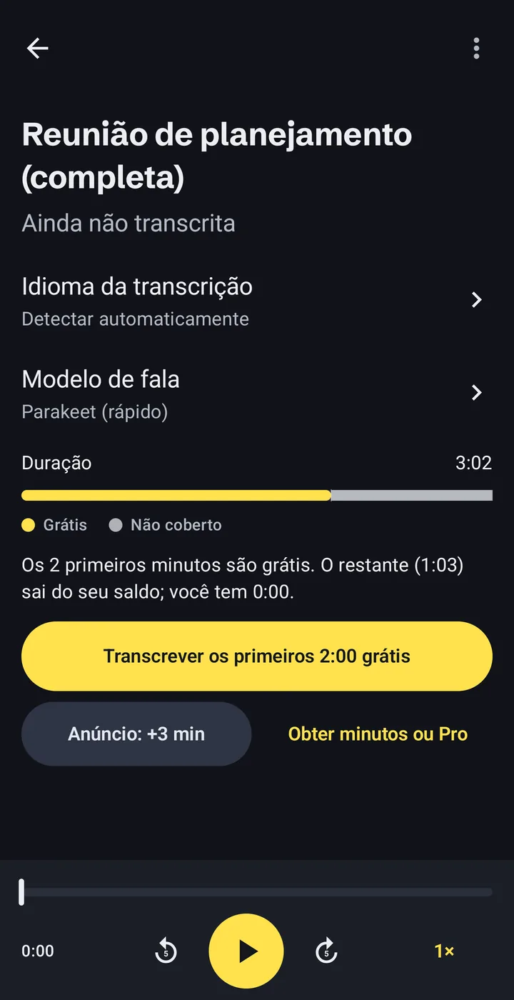

Transcrever áudio em texto no celular, sem enviar nada
O Offline Audio Transcriber transforma áudios de voz, aulas, entrevistas e qualquer MP3 ou vídeo em texto no seu celular Android. Sem conta, sem upload e sem internet depois que o modelo de voz estiver no celular.
- Conta
- Não precisa
- Modelo de voz
- 671 MB, baixado uma vez
- Grátis
- 2 min de cada gravação

Como funciona a transcrição offline
Três passos, todos no celular. O único download é o modelo de voz, uma vez só.
-
Grave ou abra um arquivo que você já tem
Use o gravador do app ou importe arquivos de áudio e vídeo, inclusive áudios de voz salvos de apps de mensagem.
- MP3
- M4A
- WAV
- OGG
- MP4
- e outros arquivos de áudio e vídeo

-
O próprio celular faz a transcrição
O modelo de voz roda no processador do celular, então o áudio não sai dele. Trabalhos longos continuam em segundo plano, com o progresso numa notificação.
Gravação de uma hora60:00Tempo de transcrição~8:00Nosso próprio teste num Samsung Galaxy S23 Ultra. Celulares mais antigos ou mais baratos são mais lentos. -
Leia, corrija e exporte
A transcrição tem marcação de tempo e acompanha o áudio enquanto toca. Toque numa palavra para ir até aquele momento, corrija erros, busque no texto e organize as gravações em pastas.
- TXT
- SRT
- VTT
- Copiar
- Compartilhar

O que fica no celular e as três vezes em que o app usa a internet
Não tem conta nem servidor nosso no meio. Cada ponto abaixo também está na política de privacidade.
Fica no celular
- Suas gravações e arquivos importados
- As transcrições e suas correções
- Notas, pastas e busca
Usa a internet, e por quê
- Modelo
Baixar o modelo de voz, uma vez.De huggingface.co e github.com.
- Anúncios
Mostrar anúncios, inclusive o opcional que dá 3 minutos.Google AdMob. No EEE, Reino Unido e Suíça, você decide no formulário de consentimento do Google.
- Compras
Comprar pacotes de minutos ou o Pro.Google Play. Nunca vemos seus dados de pagamento.
Sem analytics, sem relatórios de falhas, sem venda de dados. Detalhes na política de privacidade.
Voz para texto em 24 idiomas europeus
O modelo principal, NVIDIA Parakeet TDT 0.6B v3, entende estes idiomas:
- alemão
- búlgaro
- croata
- dinamarquês
- eslovaco
- esloveno
- espanhol
- estoniano
- finlandês
- francês
- grego
- holandês
- húngaro
- inglês
- italiano
- letão
- lituano
- maltês
- polonês
- português
- romeno
- sueco
- tcheco
- ucraniano
Um segundo modelo opcional acrescenta mais idiomas. Ele também roda no celular, mas é mais lento.
Quanto custa, antes de começar
Instalar é grátis. Você só paga pelos minutos além da parte gratuita e, antes de transcrever, vê do que cada gravação precisa.
0:00–2:00Grátis: os 2 primeiros minutos de cada gravação.
2:00–10:00Seus minutos: de anúncios curtos ou de pacotes.
Com o Pro, a gravação inteira é coberta, do tamanho que for.
- Parte gratuita
- Os 2 primeiros minutos de cada gravação. Sem precisar ver anúncio.
- Um anúncio curto
- Cada anúncio assistido dá 3 minutos. Se não carregar, nada é bloqueado.
- Pacotes de minutos
- 60, 180 ou 600 minutos. Nunca expiram.
- Pro
- Minutos ilimitados. Mensal, anual ou compra única.
O Google Play mostra os preços na sua moeda antes de você confirmar. As assinaturas são renovadas até você cancelar no Google Play. Se uma gravação precisar de mais minutos do que você tem, o app transcreve a parte gratuita e mostra exatamente quantos minutos faltam.

O que as pessoas perguntam primeiro
Minhas gravações são enviadas para algum lugar?
Não. Gravações, transcrições e notas ficam no armazenamento privado do app, no seu celular. O app só usa a internet para baixar o modelo de voz, mostrar anúncios e fazer compras pelo Google Play.
Funciona sem internet?
Sim, depois que o modelo de voz é baixado. A transcrição em si não precisa de conexão. Assistir a um anúncio para ganhar minutos e fazer compras precisam.
Quanto tempo leva a transcrição?
Num Samsung Galaxy S23 Ultra, uma gravação de uma hora levou cerca de 8 minutos no nosso teste. Celulares mais antigos ou mais baratos são mais lentos. Você pode sair do app: o trabalho continua em segundo plano.
Qual é a precisão?
Depende do áudio: qualidade do som, sotaque e barulho de fundo fazem diferença. Não divulgamos números de precisão. Confira transcrições importantes antes de confiar nelas; dá para corrigir qualquer palavra no app enquanto ouve.
O que é grátis e o que é pago?
Os 2 primeiros minutos de cada gravação são grátis. Para mais, assista a um anúncio curto (+3 minutos), compre um pacote de minutos que não expira ou assine o Pro para ter minutos ilimitados.
Qual é o tamanho do download?
O modelo de voz é baixado uma vez só e tem 671 MB. O app mostra o tamanho antes de começar. Se seu plano de dados for limitado, use Wi-Fi.
Como apago meus dados?
Apague as gravações no app ou desinstale o app para remover tudo o que ele guardou. Os modelos de voz podem ser apagados nas Configurações.
Experimente na sua próxima gravação
Sem criar conta. Os 2 primeiros minutos de cada gravação são grátis.